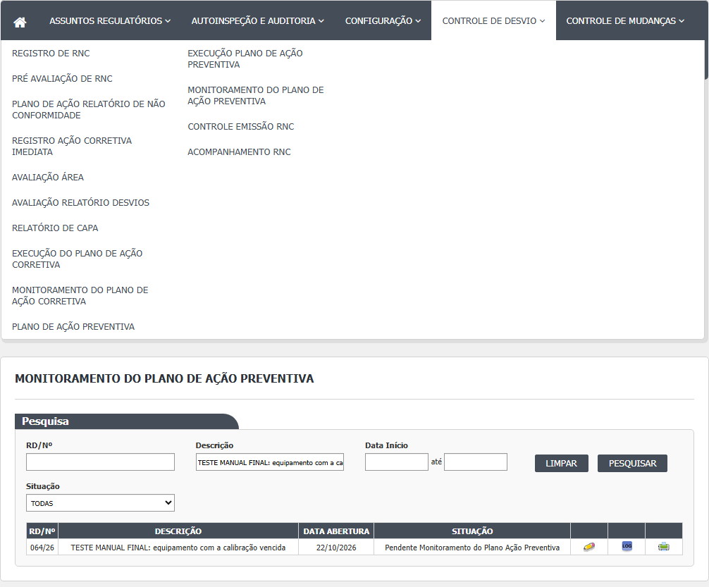
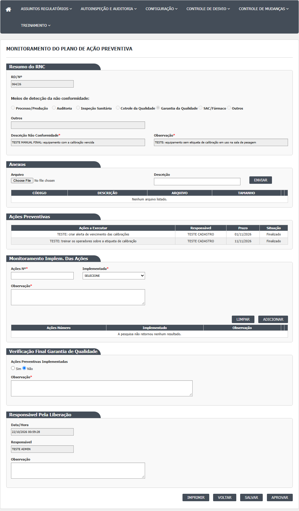
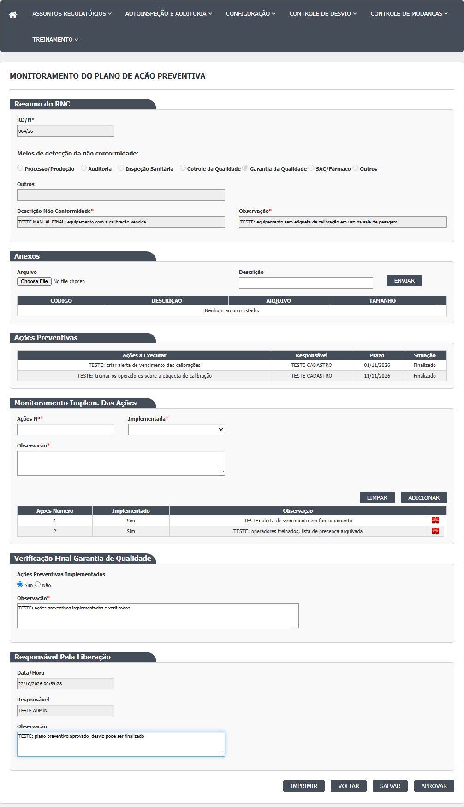
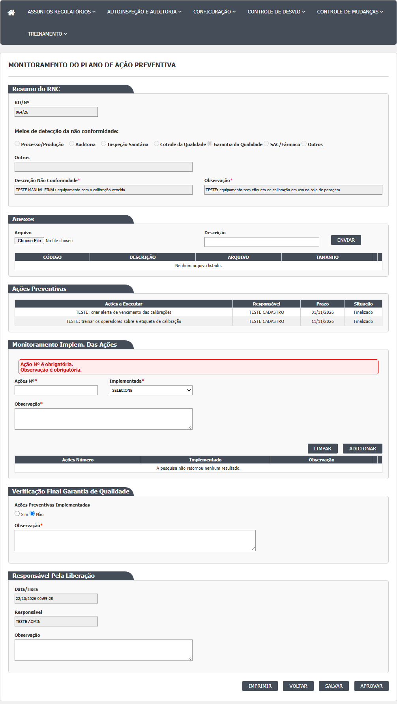
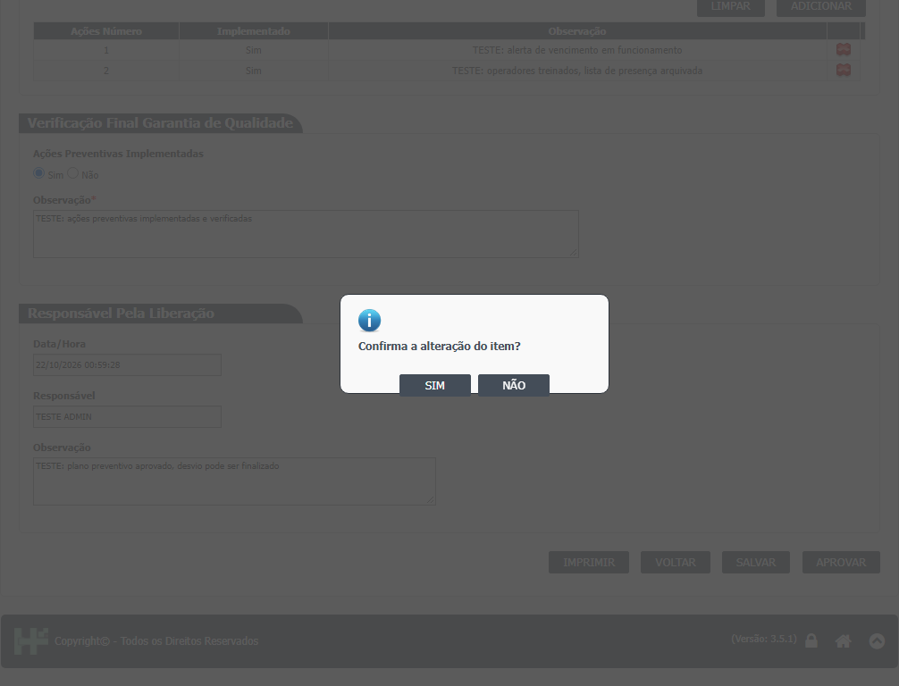
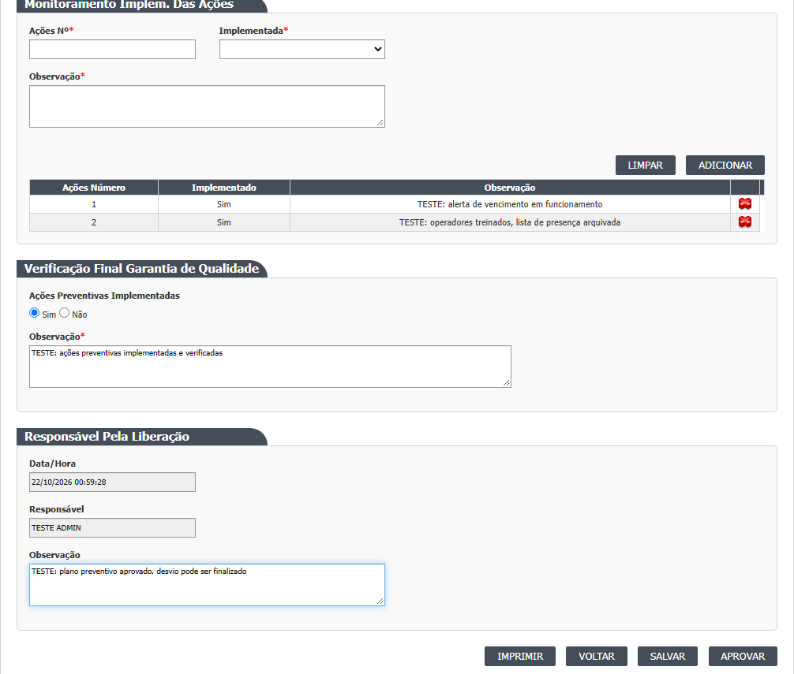
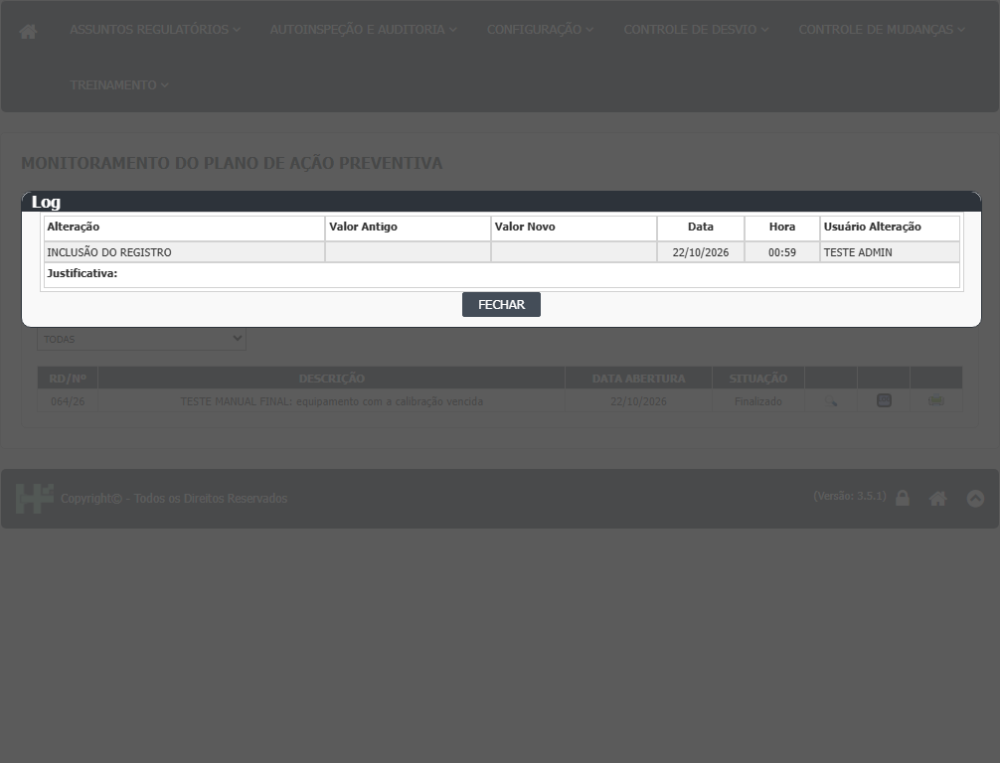

Lista (Index)
- No menu, abra Controle de Desvios › Monitoramento do Plano de Ação Preventiva. A tela abre com o bloco Pesquisa e a lista vazia. É preciso clicar em Pesquisar.
- Filtros opcionais: RD/Nº, Descrição (do desvio), Data Início e até (data de criação do desvio) e Situação (TODAS, Pendente Monitoramento do Plano Ação Preventiva, Aprovado Plano Ação Preventiva ou Reprovado Plano Ação Preventiva).
- Clique em Pesquisar. A lista mostra RD/Nº, DESCRIÇÃO, DATA ABERTURA e SITUAÇÃO do desvio. Os desvios encerrados aparecem como "Finalizado", sem dizer se o plano foi aceito ou não.
- Ícones: Editar (lápis) só enquanto o desvio está em Pendente Monitoramento do Plano Ação Preventiva; depois aparece Visualizar. Log abre o histórico da liberação. Imprimir abre o PDF Relatório de CAPA.
- Limpar apaga os filtros. Não há botão Incluir.
Observado na rodada 1 (21/10/2026), para quem usa a lista:
- Digite em RD/Nº só o número do desvio, sem o ano (DV-GQ-026). Datas: início e fim no mesmo dia, ou só a data "até", voltam vazias; data impossível (31/02/2026) é ignorada sem aviso (DV-GQ-027).
- Todos os desvios encerrados aparecem como "Finalizado"; a lista não diz se o plano foi aceito ou não aceito (CT-GQ-N12-03).
- O filtro Situação "Aprovado Plano Ação Preventiva" devolve também os desvios pendentes (9 linhas no CT-GQ-N12-03; 10 no CT-GQ-F11; a diferença se explica na rodada 2: o filtro não filtra e devolve a lista inteira, que mudou entre as duas contagens), e "Reprovado Plano Ação Preventiva" devolve 0 (DV-GQ-028).

Tela de monitoramento (Editar)
- Clique no lápis. Abre a tela com seis blocos: Resumo do RNC (só leitura), Anexos, Ações Preventivas (tabela só de leitura), Monitoramento Implem. Das Ações, Verificação Final Garantia de Qualidade e Responsável Pela Liberação.
- Confira a tabela Ações Preventivas: mostra descrição, responsável, prazo e situação de cada ação (Pendente ou Finalizado). Não mostra a data de conclusão nem a observação de quem executou; essas informações estão no PDF de CAPA.
- Monitoramento Implem. Das Ações: para cada ação, preencha Ações Nº (texto livre), escolha em Implementada (SELECIONE, Sim ou Não) e escreva a Observação; clique em Adicionar. A linha entra na tabela abaixo (Ações Número, Implementado, Observação). É preciso adicionar pelo menos uma linha antes de aprovar. Campos preenchidos e não adicionados são ignorados na gravação.
- Verificação Final Garantia de Qualidade: marque Ações Preventivas Implementadas Sim ou Não (vem marcado "Não" por padrão) e escreva a Observação, que é obrigatória. Rodada 2 (22/10/2026): a tela aberta não mostra o campo Sim ou Não; ver a subseção da rodada 2 abaixo.
- Responsável Pela Liberação: Data/Hora e Responsável vêm travados; a Observação é opcional.
- Salvar (grava sem encerrar): o sistema pergunta "Confirma a alteração do item?", abre uma janela "Informe a justificativa" e só grava com a justificativa preenchida ("A justificativa é obrigatória!" se vazia). Aparece "Alteração efetuada com sucesso.". O desvio continua em monitoramento e a tela segue aberta para novas edições.
- Aprovar (encerra): o sistema pergunta "Confirma a alteração do item?" e depois "Deseja realmente finalizar? A partir da finalização não será possível alterar o Desvio.". Em SIM nas duas, o sistema confere os campos e grava. Aparece "Alteração efetuada com sucesso.", a tela trava e o desvio fica Finalizado.
- Se faltar um dado obrigatório, uma faixa vermelha aparece no bloco com o problema e nada é gravado (ver Mensagens do sistema).
- Voltar leva à lista. Imprimir abre o PDF Relatório de CAPA.
Observado na rodada 1 (21/10/2026), na tela de monitoramento:
- Não existe botão Reprovar (CT-GQ-N12-03; DV-GQ-016).
- Aprovar sem nenhuma linha de resultado: apareceu só "Deseja realmente finalizar? A partir da finalização não será possível alterar o Desvio." e, em seguida, "Alteração efetuada com sucesso."; o desvio foi finalizado sem resultado (CT-GQ-N12-06; DV-GQ-022). A tela 9, do plano corretivo, recusa esse mesmo caso.
- Aprovar com a Observação da Verificação Final vazia: o desvio foi finalizado, sem a mensagem "A Observação de Verificação Final é obrigatória." (CT-GQ-N12-07; DV-GQ-022).
- Salvar: confirmação, janela "Informe a justificativa", recusa da justificativa vazia ("A justificativa é obrigatória!") e "Alteração efetuada com sucesso."; o desvio continuou em monitoramento e a tela reabriu editável (CT-GQ-N12-08).
- O mesmo usuário escreveu o plano, executou a ação e aprovou o monitoramento do RD 058/26, e o sistema aceitou sem aviso (CT-GQ-024; DV-GQ-023).





Telas internas que existem no código
- Incluir: só o arquivo Incluir.cshtml, modelo vazio, sem ação no controlador.
- Visualizar: a ação existe (LiberacaoPlanoAcaoPreventivaRNCController.cs:156-199) e abre a tela travada, com Imprimir e Voltar. É chamada pelo ícone Visualizar da lista quando o desvio não está mais em monitoramento. O arquivo Visualizar.cshtml existe, mas não é usado: o controlador devolve a view Editar.
- Cancelar: o script tem uma função Cancelar (LiberacaoPlanoAcaoPreventivaSalvar.js:252-257), mas não há botão nem endereço de cancelamento.
- Reprovar: o script trata a situação "r" (LiberacaoPlanoAcaoPreventivaSalvar.js:94-95), mas não há botão que a envie. A tela não tem como reprovar o plano.
- Editar ou excluir uma linha de resultado já gravada: os ícones aparecem nas linhas, mas ligam-se a uma lista do navegador que começa vazia (LiberacaoPlanoAcaoPreventivaSalvar.js:39,193-218), de modo que as linhas já gravadas não podem ser alteradas pela tela. A confirmar no teste.

Rodada 2 (22/10/2026)
Fonte: execucao/2026-10-22-desvios-rodada-2/resultado.md. O que a rodada mostrou de novo ou contrário ao passo a passo acima:
- Lista de hoje: 14 desvios (5 em Pendente Monitoramento do Plano Ação Preventiva e 9 Finalizado). O filtro Situação "Aprovado Plano Ação Preventiva" devolveu os mesmos 14, e "Reprovado Plano Ação Preventiva" devolveu 0: o filtro não filtra (DV-GQ-028). A diferença entre 9 e 10 linhas da rodada 1 vem de um desvio que entrou entre as duas contagens (conclusão pelo comportamento de hoje; as contagens antigas não puderam ser refeitas).
- Passo 9: a tela aberta não mostra o campo "Ações Preventivas Implementadas" (Sim ou Não). Não há como marcá-lo, e o encerramento não depende dele (CT-GQ-N12-11).
- Aprovar com uma ação do plano ainda Pendente: o sistema pede as duas confirmações e finaliza o desvio ("Alteração efetuada com sucesso.") (CT-GQ-N12-10; DV-GQ-046).
- Aprovar com o resultado da ação marcado como "Não" (Implementada = Não): finaliza do mesmo modo. Continua sem haver como registrar o plano como não aceito (CT-GQ-N12-11; DV-GQ-012).
- Aprovar com tudo vazio finalizou também os desvios 065/26 e 046/26 (este com um Salvar antes). A tela 9, com o mesmo usuário e a mesma situação, recusou o 040/26 com mensagens (DV-GQ-022).
- Depois de Aprovar: campos travados, só Imprimir e Voltar; na lista, o ícone passa a ser Visualizar (CT-GQ-N12-14).
- Nem Salvar nem Aprovar deixam registro no histórico do desvio (CT-GQ-N12-13; DV-GQ-047). Quem abre o histórico depois de encerrar não encontra a mudança para Finalizado, nem os resultados, nem a verificação final, nem quem encerrou e quando.
- Salvar com resultado no desvio 056/26 devolveu uma vez "Ocorreu um erro inesperado."; no 072/26 o mesmo passo funcionou. O erro não se repetiu e fica como ponto a investigar.
- A impressão do Relatório de CAPA a partir desta tela não foi conferida: a impressão dá erro de servidor (DV-GQ-018).
Rodada 3 (22/10/2026)
Fonte: execucao/2026-10-22-desvios-rodada-3c/resultado.md. O que a rodada mostrou de novo ou contrário ao passo a passo acima:
- Lista sem filtros (passo 3 e 4): os desvios em Pendente Monitoramento do Plano Ação Preventiva (043, 044, 052, 053 e 073) com o lápis e os Finalizados com a lupa (CT-GQ-N12-01).
- Filtro Situação (passo 2): Pendente Monitoramento do Plano Ação Preventiva traz os 5 desvios pendentes, certo. "Aprovado Plano Ação Preventiva" traz 20, que é a lista toda, inclusive os 5 pendentes. "Reprovado Plano Ação Preventiva" traz 0. As contagens de 9 e 10 vistas na rodada 1 eram o tamanho da lista em dois momentos (CT-GQ-N12-02; DV-GQ-060 estendido a esta tela, DV-GQ-028).
- Passo 8, linha de resultado: Adicionar sem Ações Nº mostra "Ação Nº é obrigatória." e sem Observação mostra "Observação é obrigatória."; a linha não entra (CT-GQ-N12-04). Com Implementada em SELECIONE não aparece mensagem alguma: a linha entra com "Não" e continua "Não" depois de Salvar e reabrir. Quem preenche deve escolher Sim ou Não de propósito (CT-GQ-N12-05; DV-GQ-075 estendido).
- Passo 8, Ações Nº: aceita "999" e um texto de 160 caracteres sem mensagem, e Aprovar grava ("Alteração efetuada com sucesso."). O número não tem ligação com as ações do plano (CT-GQ-N12-16; DV-GQ-079).
- Passo 12, Aprovar: depois de "Confirma a alteração do item?", a pergunta "Deseja realmente finalizar? A partir da finalização não será possível alterar o Desvio." tem SIM e NÃO. Respondendo NÃO, o desvio fica Finalizado (campos travados, Salvar escondido). Repetido em dois desvios (073/26 e 052/26). Não responda NÃO esperando cancelar (CT-GQ-N12-12; DV-GQ-078).
- Reabrir depois do Salvar parcial: a observação final e a linha de resultado estão lá, e a linha tem os ícones de alterar e excluir. A justificativa informada no Salvar não volta (campo vazio). Se alterar ou excluir uma linha já gravada funciona não foi conferido (CT-GQ-N12-09).
- Passo 10, Responsável Pela Liberação: mostra o responsável do desvio (no 043/26, o mesmo nome da tela 1), e não quem está conectado (CT-GQ-N12-15; DV-GQ-076 estendido).
- Anexos: enviar, Salvar parcial e reabrir: o anexo está lá. Excluir e Salvar: o anexo some. O histórico do desvio não traz nenhuma linha de anexo, nem de envio nem de exclusão (CT-GQ-N12-18; DV-GQ-080).
- Passo 9: segundo o resultado da rodada, existe o campo "Ações Preventivas Implementadas" nesta tela (a rodada 2 não o tinha achado). Ver Divergências encontradas, rodada 3.
Rodada 4 (22/10/2026)
Fonte: execucao/2026-10-22-desvios-rodada-4/resultado.md. O que a rodada mostrou de novo ou contrário ao passo a passo acima:
- Passo 14, Imprimir (CT-GQ-N12-17): o PDF abre em outra janela com o título "RELATÓRIO DE CAPA". Antes de encerrar o desvio (044/26) ele sai com os blocos do monitoramento vazios. Depois de encerrar (053/26) traz os resultados, a verificação final e a data, a hora e o responsável da liberação (hora lida: 16:22:46). Nos dois casos, no lugar do bloco da avaliação sai uma mensagem de erro do relatório (DV-GQ-086); o resto do relatório sai.
- A rodada não diz se a data e a hora do PDF são as do primeiro Salvar ou as do encerramento. Fica em aberto (RN-GQ-D12-10).
- Quem usar o PDF desta tela como registro deve saber que o bloco da avaliação não sai. Para a conferência completa, use as telas.
Campos da tela
Lista (Index)
| Campo na tela | Tipo | Obrigatório | Regra, limite ou valores possíveis | Fonte (arquivo:linha) |
|---|---|---|---|---|
| RD/Nº | Texto | Não | "Contém" sobre o número do desvio sem o ano Rodada 1: com o ano (nnn/26) não acha; só com o número acha (CT-GQ-F05, CT-GQ-F06; DV-GQ-026). | Bloco2/Views/LiberacaoPlanoAcaoPreventivaRNC/Index.cshtml:26; LiberacaoPlanoAcaoPreventivaRNCController.cs:65-66 |
| Descrição | Texto | Não | "Contém" sobre a descrição do desvio | Index.cshtml:31; LiberacaoPlanoAcaoPreventivaRNCController.cs:68-69 |
| Data Início | Data | Não | dd/mm/aaaa. Compara com a data de criação do desvio (maior ou igual) Rodada 1: com a Data Início de hoje a lista trouxe 9 desvios; data impossível (31/02/2026) é ignorada sem mensagem (CT-GQ-F09; DV-GQ-027). | Index.cshtml:37; Bloco2/Script/LiberacaoPlanoAcaoPreventivaIndex.js:2-3; LiberacaoPlanoAcaoPreventivaRNCController.cs:71-72 |
| até (Data Fim) | Data | Não | dd/mm/aaaa. Menor ou igual, sem somar um dia Rodada 1: Data Início e até iguais a hoje devolveram 0 linhas, e só a data até também devolveu 0 (CT-GQ-F08; DV-GQ-027). | Index.cshtml:41; LiberacaoPlanoAcaoPreventivaRNCController.cs:74-75 |
| Situação | Lista | Não | TODAS (0), Pendente Monitoramento do Plano Ação Preventiva (18), Aprovado Plano Ação Preventiva (23), Reprovado Plano Ação Preventiva (24). A opção 23 não tem tratamento na consulta, então devolve o mesmo que TODAS Rodada 1 (CT-GQ-N12-03, CT-GQ-F11; DV-GQ-028): "Aprovado Plano Ação Preventiva" devolveu desvios pendentes e encerrados misturados (9 linhas no N12-03; 10 no F11); "Reprovado Plano Ação Preventiva" devolveu 0. Rodada 2 (22/10/2026; ponto em aberto (b)): com 14 desvios na lista, TODAS e "Aprovado Plano Ação Preventiva" devolveram os mesmos 14, e "Reprovado Plano Ação Preventiva" devolveu 0 (DV-GQ-028 reconfirmado). | Index.cshtml:52-58; Bloco2/Models/LiberacaoPlanoAcaoPreventivaRNCIndexModel.cs:21-31; LiberacaoPlanoAcaoPreventivaRNCController.cs:77-87 |
| Coluna RD/Nº | Texto (resultado) | Não se aplica | Número com o ano | LiberacaoPlanoAcaoPreventivaIndex.js:36; Bloco2/Models/LiberacaoPlanoAcaoPreventivaIndexResultadoModel.cs:65 |
| Coluna DESCRIÇÃO | Texto (resultado) | Não se aplica | Descrição do desvio | LiberacaoPlanoAcaoPreventivaIndex.js:37 |
| Coluna DATA ABERTURA | Data (resultado) | Não se aplica | Data de criação do desvio, dd/MM/aaaa | LiberacaoPlanoAcaoPreventivaIndex.js:38; LiberacaoPlanoAcaoPreventivaIndexResultadoModel.cs:22-31 |
| Coluna SITUAÇÃO | Texto (resultado) | Não se aplica | Pendente Monitoramento do Plano Ação Preventiva ou Finalizado (a variante "Aprovado Plano Ação Corretiva - Reprovado Plano Ação Preventiva" do código nunca ocorre na lista) Rodada 1 (CT-GQ-N12-03): todos os encerrados aparecem como Finalizado, sem distinguir plano aceito de não aceito. | LiberacaoPlanoAcaoPreventivaIndex.js:39; LiberacaoPlanoAcaoPreventivaIndexResultadoModel.cs:69-74 |
Tela de monitoramento (Editar)
| Campo na tela | Tipo | Obrigatório | Regra, limite ou valores possíveis | Fonte (arquivo:linha) |
|---|---|---|---|---|
| Id do desvio (oculto) | Número | Preenchido pelo sistema | Identifica o desvio | Bloco2/Views/LiberacaoPlanoAcaoPreventivaRNC/Editar.cshtml:42 |
| Resumo do RNC | Textos e opções travados | Não | Os mesmos campos da tela Plano de Ação Preventiva (RD/Nº, sete meios de detecção, Outros, Descrição Não Conformidade, Observação) | Bloco2/Views/Shared/_PartialRegistroNC.cshtml:12-103 |
| Arquivo e Descrição (Anexos) | Arquivo e texto | Sim, para enviar | Sem lista de tipos nem limite de tamanho; "O arquivo não foi informado." e "A descrição não foi informada." | Editar.cshtml:52-54; UI/Controllers/UploadController.cs:127-129 |
| Tabela Ações Preventivas | Tabela só de leitura | Não | Colunas Ações a Executar, Responsável, Prazo e Situação; sem ícones Rodada 2 (CT-GQ-N12-10): a tabela mostra a ação com situação Pendente e o sistema encerra o desvio mesmo assim (DV-GQ-046). | Editar.cshtml:76; Bloco2/Views/Shared/_GridAcoesPreventivas.cshtml:6-41 |
| Ações Nº | Texto | Sim | Texto livre (por exemplo "1" ou "ação de treinamento"); não é escolhido entre as ações do plano e não há ligação com elas. Mensagem do navegador "Ação Nº é obrigatória." | Editar.cshtml:91-93; Bloco2/Script/LiberacaoPlanoAcaoPreventivaSalvar.js:176-178 |
| Implementada (da linha de resultado) | Lista | Marcado com asterisco, mas não conferido | SELECIONE, Sim (true) ou Não (false). O navegador não exige a escolha; "SELECIONE" não é um valor válido e a linha pode ser gravada como "Não" | Editar.cshtml:94-101; LiberacaoPlanoAcaoPreventivaSalvar.js:172-191 |
| Observação (da linha de resultado) | Texto (4 linhas) | Sim | Mensagem do navegador "Observação é obrigatória." Sem tamanho máximo (NVARCHAR(MAX)) | Editar.cshtml:104-109; LiberacaoPlanoAcaoPreventivaSalvar.js:179-181; DB/TBL_ACAO_RESULTADO.sql:5 |
| Tabela de resultados | Tabela | Pelo menos uma linha | Colunas Ações Número, Implementado (Sim ou Não), Observação, e dois ícones (alterar e excluir). Vazia: "A pesquisa não retornou nenhum resultado." Rodada 1 (CT-GQ-N12-06; DV-GQ-022): na prática, aprovar sem nenhuma linha foi aceito; a exigência não funcionou nesta tela. Rodada 2 (22/10/2026): também finalizou os desvios 065/26 e 046/26 sem nenhuma linha de resultado (DV-GQ-022). | Bloco2/Views/Shared/_GridAcoesResultados.cshtml:6-17,20-25 |
| Ações Preventivas Implementadas | Opção Sim ou Não | Não | Padrão "Não" se nada estiver gravado; o resultado não é conferido contra as linhas nem contra as ações Rodada 2 (CT-GQ-N12-11): a tela aberta NÃO mostra este campo; a descrição vem da leitura do código e não se confirmou na tela (linha do código a localizar; pergunta ao desenvolvimento). | Editar.cshtml:132-152; LiberacaoPlanoAcaoPreventivaSalvar.js:119 |
| Observação (Verificação Final) | Texto (4 linhas) | Sim | Verificação final da GQ. Mensagem "A Observação de Verificação Final é obrigatória." Sem tamanho máximo Rodada 1 (CT-GQ-N12-07; DV-GQ-022): com o campo vazio, Aprovar finalizou o desvio sem recusa; a obrigatoriedade não funcionou nesta tela. Rodada 2 (22/10/2026): também não funcionou nos desvios 065/26 e 046/26 (DV-GQ-022). | Editar.cshtml:154-159; Domain/Service/LiberacaoPlanoAcaoPreventivaValidator.cs:25-29; DB/TBL_LIBERACAO_PLANO_ACAO_PREVENTIVA_RNC.sql:6 |
| Data/Hora (Responsável Pela Liberação) | Data e hora travadas | Não | Hora em que a tela foi aberta. Não é enviada nem gravada; o servidor usa a hora do servidor | Editar.cshtml:169-171; LiberacaoPlanoAcaoPreventivaRNCController.cs:217,222 |
| Responsável (Responsável Pela Liberação) | Texto travado | Não | Mostra o responsável do desvio (o mesmo texto do desvio), e não quem está aprovando. O nome gravado na liberação é o do usuário conectado, na primeira gravação | Editar.cshtml:174-177; Bloco2/Models/RegistroNaoConformidadeEditarModel.cs:174; LiberacaoPlanoAcaoPreventivaRNCController.cs:220-225 |
| Observação (Responsável Pela Liberação) | Texto (4 linhas) | Não | Observação da liberação. Sem tamanho máximo | Editar.cshtml:185-190; LiberacaoPlanoAcaoPreventivaRNCController.cs:235; DB/TBL_LIBERACAO_PLANO_ACAO_PREVENTIVA_RNC.sql:9 |
| Justificativa (janela) | Texto | Sim, no Salvar | Janela "Informe a justificativa"; "A justificativa é obrigatória!" se vazia. Só vale no navegador | UI/Views/Shared/_ModalJustificativa.cshtml:3-14,29-31 |
Rodada 2 (22/10/2026)
- Situação (lista): TODAS e "Aprovado Plano Ação Preventiva" devolvem a mesma lista (14 desvios em 22/10/2026); "Reprovado Plano Ação Preventiva" devolve 0 (DV-GQ-028).
- Ações Preventivas Implementadas: o campo não aparece na tela aberta (CT-GQ-N12-11). Ver a regra RN-GQ-D12-21.
- Tabela Ações Preventivas: mostra a ação com situação Pendente, e o sistema deixa encerrar o desvio mesmo assim (CT-GQ-N12-10; DV-GQ-046).
- Tabela de resultados e Observação da Verificação Final: obrigatórias pelo código, mas não impediram o encerramento nos desvios 065/26 e 046/26 (DV-GQ-022).
Rodada 3 (22/10/2026)
Fonte: execucao/2026-10-22-desvios-rodada-3c/resultado.md.
- Situação (lista): Pendente Monitoramento do Plano Ação Preventiva traz os 5 pendentes; "Aprovado Plano Ação Preventiva" traz 20 (a lista toda, com os 5 pendentes); "Reprovado Plano Ação Preventiva" traz 0 (CT-GQ-N12-02; DV-GQ-060 e DV-GQ-028).
- Ações Nº: obrigatório no navegador ("Ação Nº é obrigatória."); aceita "999" e texto de 160 caracteres, sem ligação com as ações do plano (CT-GQ-N12-04 e N12-16; DV-GQ-079).
- Implementada (da linha de resultado): SELECIONE é aceito sem mensagem e a linha é gravada como "Não" (CT-GQ-N12-05; DV-GQ-075).
- Observação (da linha de resultado): obrigatória no navegador ("Observação é obrigatória.") (CT-GQ-N12-04).
- Tabela de resultados: depois de Salvar e reabrir, a linha reaparece com os ícones de alterar e excluir (CT-GQ-N12-09).
- Responsável (Responsável Pela Liberação): mostra o responsável do desvio, e não o usuário conectado (CT-GQ-N12-15; DV-GQ-076).
- Justificativa do Salvar parcial: não volta para a tela quando se reabre o desvio (CT-GQ-N12-09).
- Ações Preventivas Implementadas: existe na tela, pelo resultado da rodada 3 (sem caso próprio). Contradiz a rodada 2 (RN-GQ-D12-21).
Rodada 4 (22/10/2026)
Fonte: execucao/2026-10-22-desvios-rodada-4/resultado.md.
- Tabela de resultados e Observação (Verificação Final): no PDF só aparecem depois de encerrar o desvio; antes, o bloco sai vazio (CT-GQ-N12-17; 044/26 e 053/26).
- Data/Hora e Responsável (Responsável Pela Liberação): no PDF depois de encerrar saem a data, a hora (16:22:46 no 053/26) e o responsável da liberação. O resultado não distingue se a hora é a do primeiro Salvar ou a do encerramento (RN-GQ-D12-10).
Botões e ações
| Botão ou ação | Quando aparece | O que faz | Para onde leva o desvio | Fonte |
|---|---|---|---|---|
| Pesquisar | Sempre | Carrega a lista | Não muda o desvio | Index.cshtml:46; LiberacaoPlanoAcaoPreventivaIndex.js:19-73 |
| Limpar (filtros) | Sempre | Esvazia os filtros; não limpa a tabela já carregada (o script limpa um elemento de outro nome) | Não muda o desvio | Index.cshtml:45; LiberacaoPlanoAcaoPreventivaIndex.js:75-82 |
| Editar (lápis) | Desvio em Pendente Monitoramento do Plano Ação Preventiva | Abre a tela de monitoramento | Continua em Pendente Monitoramento do Plano Ação Preventiva | UI/Helpers/GerenciadorAcessoTelaLiberacaoPlanoAcaoPreventiva.cs:15-23; LiberacaoPlanoAcaoPreventivaIndex.js:41-44 |
| Visualizar (ícone) | Desvio em outra situação, por exemplo Finalizado | Abre a tela travada Rodada 2 (CT-GQ-N12-14): depois de Aprovar, a lista mostra Visualizar e a tela abre travada, só com Imprimir e Voltar. | Não muda o desvio | UI/Scripts/HSGridApi.js:277-287; LiberacaoPlanoAcaoPreventivaIndex.js:49-52,100-102 |
| Log (histórico) | Sempre na lista | Abre o histórico da liberação (classe LiberacaoPlanoAcaoPreventivaRNC), pelo Id da liberação; com Id zero (ainda sem liberação) sai vazio Rodada 2 (CT-GQ-N12-13; DV-GQ-047): depois de Salvar ou Aprovar, o histórico não ganha nenhum registro. | Não muda o desvio | LiberacaoPlanoAcaoPreventivaIndex.js:45-48; LiberacaoPlanoAcaoPreventivaIndexResultadoModel.cs:59-63 |
| Imprimir (ícone e botão) | Sempre | Abre o PDF Relatório de CAPA do desvio | Não muda o desvio | LiberacaoPlanoAcaoPreventivaIndex.js:53-56; Editar.cshtml:195; LiberacaoPlanoAcaoPreventivaRNCController.cs:380-405 |
| Enviar (anexo) | Tela não travada | Envia o arquivo para a lista de anexos do desvio | Não muda a situação | Editar.cshtml:52-54 |
| Adicionar (resultado) | Tela não travada | Acrescenta a linha de resultado da ação, depois de conferir Ações Nº e Observação | Não muda a situação | Editar.cshtml:112; LiberacaoPlanoAcaoPreventivaSalvar.js:143-191 |
| Limpar (resultado) | Tela não travada | Esvazia os campos da linha de resultado | Não muda a situação | Editar.cshtml:111; LiberacaoPlanoAcaoPreventivaSalvar.js:220-225 |
| Ícone alterar (linha de resultado) | Linhas já gravadas, tela não travada | Quer devolver a linha aos campos; sem efeito sobre as linhas já gravadas (a lista do navegador começa vazia) | Não muda a situação | _GridAcoesResultados.cshtml:37-41; LiberacaoPlanoAcaoPreventivaSalvar.js:208-218 |
| Lixeira (linha de resultado) | Linhas na tabela, tela não travada | Marca o resultado para remover ao salvar; vale só para as linhas adicionadas na sessão | Não muda a situação | _GridAcoesResultados.cshtml:42-46; LiberacaoPlanoAcaoPreventivaSalvar.js:193-200 |
| Salvar | Desvio ainda não Finalizado | Pede confirmação e justificativa e grava o monitoramento sem encerrar Rodada 1 (CT-GQ-N12-08): confirmação, janela de justificativa com recusa do vazio e "Alteração efetuada com sucesso."; o desvio continua em monitoramento e a tela reabre editável. Rodada 2: o Salvar também não deixa registro no histórico (DV-GQ-047); no desvio 056/26 o primeiro Salvar com resultado devolveu "Ocorreu um erro inesperado.", que não se repetiu. | Continua em Pendente Monitoramento do Plano Ação Preventiva | Editar.cshtml:197-199; LiberacaoPlanoAcaoPreventivaSalvar.js:106-111,131-140; LiberacaoPlanoAcaoPreventivaRNCController.cs:297-378 |
| Aprovar | Desvio ainda não Finalizado | Pede duas confirmações, confere os dados e encerra o desvio Rodada 1: finalizou o desvio sem nenhuma linha de resultado (CT-GQ-N12-06) e sem a verificação final (CT-GQ-N12-07); DV-GQ-022. Rodada 2 (22/10/2026): finalizou também com uma ação do plano ainda Pendente (CT-GQ-N12-10; DV-GQ-046), com o resultado da ação marcado "Não" (CT-GQ-N12-11; DV-GQ-012) e com tudo vazio nos desvios 065/26 e 046/26 (DV-GQ-022); não deixa registro no histórico (DV-GQ-047). | Finalizado, com o plano preventivo Aceito | Editar.cshtml:200; LiberacaoPlanoAcaoPreventivaSalvar.js:91-104,113-129; LiberacaoPlanoAcaoPreventivaRNCController.cs:239-243 |
| Reprovar | Não existe na tela | Se existisse, levaria o desvio a Finalizado, com o plano Não Aceito, porque o código trata tudo o que não é "a" como reprovado Rodada 1 (CT-GQ-N12-03; passo P12.1): confirmado que o botão não existe (DV-GQ-016). Rodada 2: reconfirmado no CT-GQ-N12-11 (não há como registrar o plano como Não Aceito). | Finalizado | LiberacaoPlanoAcaoPreventivaRNCController.cs:244-248; LiberacaoPlanoAcaoPreventivaSalvar.js:94-95 |
| Voltar | Sempre na tela | Volta para a lista | Não muda a situação | Editar.cshtml:196; LiberacaoPlanoAcaoPreventivaSalvar.js:374-376 |
Rodada 2 (22/10/2026)
- Aprovar: ação Pendente (CT-GQ-N12-10), resultado "Não" (CT-GQ-N12-11) e tudo vazio (065/26 e 046/26) finalizam o desvio, sempre com as duas confirmações e sem recusa (DV-GQ-046, DV-GQ-012, DV-GQ-022).
- Salvar: funcionou duas vezes seguidas no 072/26; no 056/26 o primeiro Salvar com resultado devolveu "Ocorreu um erro inesperado.", sem repetir.
- Salvar e Aprovar não acrescentam registro ao histórico (DV-GQ-047).
- Reprovar continua inexistente (DV-GQ-016).
- Depois de Aprovar, só ficam Imprimir e Voltar (CT-GQ-N12-14).
Rodada 3 (22/10/2026)
Fonte: execucao/2026-10-22-desvios-rodada-3c/resultado.md.
- Aprovar: a segunda pergunta ("Deseja realmente finalizar? ...") não cancela com NÃO. O desvio é finalizado do mesmo jeito, com os campos travados e o Salvar escondido (CT-GQ-N12-12, desvios 073/26 e 052/26; DV-GQ-078).
- Adicionar (resultado): sem Ações Nº ou sem Observação, mostra a mensagem e a linha não entra; com Implementada em SELECIONE, a linha entra como "Não" sem aviso (CT-GQ-N12-04 e N12-05; DV-GQ-075).
- Salvar (parcial): depois de reabrir, a observação final e as linhas aparecem; a justificativa não (CT-GQ-N12-09).
- Enviar e excluir anexo: o anexo enviado e salvo reaparece ao reabrir; excluído e salvo, some; nenhum dos dois deixa linha no histórico (CT-GQ-N12-18; DV-GQ-080).
- Ícones de alterar e excluir da linha gravada: aparecem depois de reabrir; o efeito deles não foi conferido (CT-GQ-N12-09).
Rodada 4 (22/10/2026)
Fonte: execucao/2026-10-22-desvios-rodada-4/resultado.md.
- Imprimir (ícone da lista e botão da tela): abre o PDF Relatório de CAPA. Antes de encerrar, sai com os blocos do monitoramento vazios; depois de encerrar, com os resultados, a verificação final e os dados da liberação. Nos dois casos, a mensagem de erro do relatório aparece no lugar da avaliação (CT-GQ-N12-17; DV-GQ-086).
Mensagens do sistema
| Mensagem (texto exato do código) | Quando aparece | Fonte |
|---|---|---|
| Ação Nº é obrigatória. | Adicionar resultado sem Ações Nº | Bloco2/Script/LiberacaoPlanoAcaoPreventivaSalvar.js:177 |
| Observação é obrigatória. | Adicionar resultado sem observação | LiberacaoPlanoAcaoPreventivaSalvar.js:180 |
| Confirma a alteração do item? | Ao clicar em Salvar ou em Aprovar Visto na tela em 21/10/2026 (CT-GQ-N12-08). | LiberacaoPlanoAcaoPreventivaSalvar.js:126,138 |
| Informe a justificativa | Janela aberta ao confirmar o Salvar Visto na tela em 21/10/2026 (CT-GQ-N12-08). | UI/Views/Shared/_ModalJustificativa.cshtml:22 |
| A justificativa é obrigatória! | Salvar com a janela de justificativa vazia Visto na tela em 21/10/2026 (CT-GQ-N12-08). | UI/Views/Shared/_ModalJustificativa.cshtml:13 |
| Deseja realmente finalizar? A partir da finalização não será possível alterar o Desvio. | Segunda confirmação do Aprovar Visto na tela em 21/10/2026 (CT-GQ-N12-06). | LiberacaoPlanoAcaoPreventivaSalvar.js:98 |
| Alteração efetuada com sucesso. | Salvar ou Aprovar gravados. Depois de Aprovar, a mensagem não diz que o desvio foi finalizado Visto na tela em 21/10/2026 ao finalizar (CT-GQ-N12-06) e ao salvar (CT-GQ-N12-08). | LiberacaoPlanoAcaoPreventivaRNCController.cs:274,357; UI/Controllers/GQControllerBase.cs:95 |
| A Observação de Verificação Final é obrigatória. | Salvar ou Aprovar sem a observação da verificação final (faixa em Verificação Final) Rodada 1 (CT-GQ-N12-07; DV-GQ-022): NÃO apareceu na tela 12 ao aprovar com a verificação final vazia; o desvio foi finalizado. A mensagem apareceu na tela 9 (CT-GQ-N09-01). Rodada 2 (22/10/2026): também não apareceu nos desvios 065/26 e 046/26; na tela 9 o 040/26 mostrou a mensagem. | Domain/Service/LiberacaoPlanoAcaoPreventivaValidator.cs:27 |
| A Observação monitoramento implementação das ações é obrigatória. (número da ação) | Uma linha de resultado sem observação (só por chamada direta, pois o navegador bloqueia) | LiberacaoPlanoAcaoPreventivaValidator.cs:34 |
| É necessária resultado da implementação das Ações. | Salvar ou Aprovar sem nenhuma linha de resultado Rodada 1 (CT-GQ-N12-06; DV-GQ-022): NÃO apareceu na tela 12 ao aprovar sem nenhuma linha de resultado; o desvio foi finalizado. A mensagem apareceu na tela 9 (CT-GQ-N09-02). Rodada 2 (22/10/2026): também não apareceu nos desvios 065/26 e 046/26; na tela 9 o 040/26 mostrou a mensagem. | LiberacaoPlanoAcaoPreventivaValidator.cs:40 |
| O Ações Nº na Implementação é obrigatório. | Linha de resultado sem Ações Nº (só por chamada direta) | LiberacaoPlanoAcaoPreventivaValidator.cs:49 |
| Responsável na Ação Preventiva é obrigatório. | Linha de resultado sem observação. O texto está errado: fala de responsável, mas o campo que falta é a observação | LiberacaoPlanoAcaoPreventivaValidator.cs:55 |
| Entidade de domínio não pode ser nula. | Plano não encontrado na gravação (caso raro) | LiberacaoPlanoAcaoPreventivaValidator.cs:17 |
| Ocorreu um erro inesperado. | Erro não previsto, por exemplo desvio sem plano preventivo; ao abrir a tela com erro volta à lista com esse aviso Visto na tela em 22/10/2026 uma vez, ao Salvar com resultado no desvio 056/26 (CT-GQ-N12-13); no 072/26 o mesmo passo funcionou, e o erro não se repetiu. | LiberacaoPlanoAcaoPreventivaRNCController.cs:291,375,150; UI/Controllers/GQControllerBase.cs:93 |
| Ocorreu um erro interno não esperado. | O servidor devolve erro técnico ao navegador | UI/Scripts/HSApi.js:23 |
| Arquivo enviado com sucesso. / O arquivo não foi informado. / A descrição não foi informada. | Envio de anexos | UI/Views/Shared/_UploadArquivo.cshtml:44; UI/Controllers/UploadController.cs:128-129 |
| A pesquisa não retornou nenhum resultado. | Lista, ou tabela de resultados, vazia Rodada 1: aparece também quando se busca RD/Nº com o ano (DV-GQ-026) e com datas de um só dia (DV-GQ-027). | UI/Scripts/HSGridApi.js:209; Bloco2/Script/LiberacaoPlanoAcaoPreventivaSalvar.js:417 |
| Não foi possível obter as solicitações mudanças | Erro ao pesquisar (texto copiado de outra tela) | LiberacaoPlanoAcaoPreventivaRNCController.cs:104 |
| Não foi possível imprimir o RNC | Erro ao gerar o PDF | LiberacaoPlanoAcaoPreventivaRNCController.cs:403 |
Rodada 2 (22/10/2026)
Mensagens vistas na tela 12 (execucao/2026-10-22-desvios-rodada-2/resultado.md):
| Mensagem (texto exato) | Quando apareceu |
|---|---|
| Confirma a alteração do item? | Aprovar com tudo vazio no 065/26 (primeira confirmação) |
| Deseja realmente finalizar? A partir da finalização não será possível alterar o Desvio. | Aprovar com tudo vazio (065/26) e com ação Pendente (059/26) |
| Alteração efetuada com sucesso. | Depois de finalizar o 065/26, o 059/26 e o 057/26, e ao Salvar o 072/26. A mensagem não diz que o desvio foi finalizado |
| Ocorreu um erro inesperado. | Salvar com resultado no 056/26, uma vez |
Mensagens que o código prevê e que NÃO apareceram na tela 12 ao aprovar vazio (065/26 e 046/26): "É necessária resultado da implementação das Ações." e "A Observação de Verificação Final é obrigatória.". Na tela 9, o 040/26 mostrou as duas (ponto em aberto (a)).
Rodada 3 (22/10/2026)
Fonte: execucao/2026-10-22-desvios-rodada-3c/resultado.md. Mensagens vistas na tela 12 (texto exato):
| Mensagem (texto exato) | Quando apareceu |
|---|---|
| Ação Nº é obrigatória. | Adicionar resultado sem Ações Nº (CT-GQ-N12-04) |
| Observação é obrigatória. | Adicionar resultado sem Observação (CT-GQ-N12-04) |
| Confirma a alteração do item? | Primeira pergunta do Aprovar (CT-GQ-N12-12) |
| Deseja realmente finalizar? A partir da finalização não será possível alterar o Desvio. | Segunda pergunta do Aprovar, com SIM e NÃO. Com NÃO, o desvio é finalizado do mesmo modo (CT-GQ-N12-12; DV-GQ-078) |
| Alteração efetuada com sucesso. | Aprovar com Ações Nº "999" e com texto de 160 caracteres (CT-GQ-N12-16; DV-GQ-079) |
Não apareceu mensagem nenhuma para Implementada em SELECIONE (CT-GQ-N12-05) nem para anexo enviado ou excluído no histórico (CT-GQ-N12-18).
Rodada 4 (22/10/2026)
Fonte: execucao/2026-10-22-desvios-rodada-4/resultado.md. Mensagem vista na tela 12 (o texto exato está no documento interno):
| Mensagem | Quando apareceu |
|---|---|
| Mensagem de erro do relatório, no lugar do bloco da avaliação | No PDF Relatório de CAPA impresso pela tela, antes de encerrar (044/26) e depois de encerrar (053/26) (CT-GQ-N12-17; DV-GQ-086) |